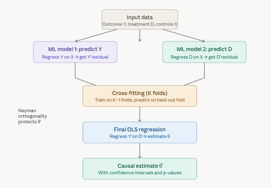

The model
DML assumes a partially linear data-generating process:
\[Y = \theta D + g(X) + \varepsilon\] \[D = m(X) + V\]
where \(Y\) is the outcome, \(D\) is the treatment, \(X\) is a (potentially very large) vector of confounders, and \(\theta\) is the causal effect you want. The functions \(g(X)\) and \(m(X)\) are called nuisance functions — they govern how confounders affect the outcome and treatment, but you don’t care about them directly.
The five-step pipeline
Step 1 — Residualize the outcome. Train any ML model to predict \(Y\) from \(X\). Compute the residual \(\tilde{Y} = Y - \hat{g}(X)\): the part of \(Y\) that confounders cannot explain.
Step 2 — Residualize the treatment. Train a second ML model to predict \(D\) from \(X\). Compute \(\tilde{D} = D - \hat{m}(X)\): the part of \(D\) that confounders cannot explain.
Step 3 — Cross-fit to prevent overfitting. If you train the nuisance models and compute residuals on the same data, the residuals will be artificially small (overfitting). Instead, split the data into \(K\) folds, train on \(K-1\) folds, and predict residuals on the held-out fold. Rotate through all folds and aggregate.
Step 4 — Final OLS. Regress \(\tilde{Y}\) on \(\tilde{D}\): \[\tilde{Y} = \theta\,\tilde{D} + \text{error}\]
The coefficient \(\hat{\theta}\) is your causal estimate. By construction, you’ve partialled out all confounding variation captured in \(X\).
Step 5 — Inference. Because of the orthogonality property (below), \(\hat{\theta}\) is \(\sqrt{n}\)-consistent and asymptotically normal, giving you valid standard errors, confidence intervals, and p-values.
